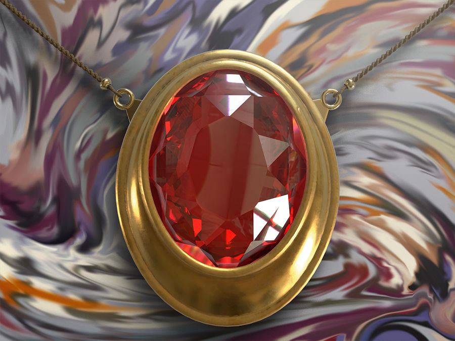

Mox Ruby
Mox Ruby fournit un mana rouge supplémentaire. Le rouge est la couleur de l'agression et de la rapidité dans "Magic: The Gathering", et Mox Ruby est donc un élément clé dans les jeux agressifs et axés sur les dégâts directs. L'image d'un rubis étincelant sur la carte symbolise la puissance brute et l'énergie explosive du mana rouge.